это основной вид услуг, включающий перевод текстов различных типов: технической документации, юридических документов, маркетинговых материалов, книг, сайтов и пр.
перевод в реальном времени, который бывает синхронным (перевод сразу во время речи) или последовательным (перевод после завершения фразы).
адаптация контента (программного обеспечения, сайтов, игр) под культурные и лингвистические особенности конкретного рынка, включая перевод, адаптацию изображений, валют, дат, мер и других аспектов.
перевод субтитров, дубляж и озвучка фильмов, видеоуроков, рекламных роликов и других аудиовизуальных материалов.
проверка переведённых текстов на предмет точности перевода, грамотности, стилистики и соответствия оригиналу.
творческая адаптация рекламных и маркетинговых материалов, чтобы они соответствовали культуре и ожиданиям целевой аудитории, сохраняя оригинальный смысл и стиль.
такие как юридические, медицинские, научные и технические тексты, требующие особых знаний в соответствующих областях.
языка и культуры – помощь в понимании тонкостей языка и культурных различий для успешного ведения бизнеса на международном уровне.